fixture_after.png
The swap repair ran before MosaicLayout's extra-ring swap-back, which is itself a strong repair, so most of its work was wasted or undone. Moving it after the ring step, keeping only the contiguity stage and guarding it with an accept-if-better test takes all four measured cases to zero split regions and groups.
Tiles are coloured one colour per region (tab20 + tab20b + tab20c); districts are coloured by their state. A region whose tiles form more than one block is outlined in black, hatched, and labelled. Same inputs, same seeds, same axis limits on both sides; the only difference is the branch.
In districts_group_by_before_after.png the left panel has fourteen hatched states, several badly scattered (California, Florida, Virginia). The right panel has none, and the map is not visibly more distorted for it — states remain compact blobs in roughly their real positions.
holes_before_after.png is the check that the extra-ring swap-back still does its job. The two panels are pixel-identical because the repair only permutes *which geometry owns* each already-occupied tile; it never changes the set of occupied tiles, so it cannot open a hole.
| Case | Regions correct | Non-contiguous regions | Split groups | Wall time |
|---|---|---|---|---|
| 3x3 synthetic fixture | 9/9 - 9/9 | 2 - **0** | - | 0.06 s - 0.06 s |
| US states (154 tiles) | 49/49 - 49/49 | 2 - **0** | - | 2.02 s - 1.61 s |
| Districts (1 tile each) | 432/432 - 432/432 | 0 - 0 | - | 5.23 s - 5.34 s |
Districts + group_by | 432/432 - 432/432 | 0 - 0 | 14 - **0** | 5.27 s - 5.42 s |
(Each cell reads "before - after".) No metric regresses on any case. Wall time is unchanged within noise; on plain districts the repair finds nothing to do and moves zero tiles.
Geographic disturbance, measured as the shift of each region's tile-centroid in tile widths:
| Case | Regions moved | Mean shift | Max shift |
|---|---|---|---|
| 3x3 fixture | 4 of 9 | 0.18 | 0.58 |
| US states | 6 of 49 | 0.08 | 0.87 |
| Districts | 0 of 432 | 0 | 0 |
Districts + group_by | 71 of 432 | 0.45 | 9.17 |
The single 9.17-tile shift on grouped districts is inherent to the move, not damage: a chain swap rotates ownership along a path, so the stranded district travels the whole chain back to its own state while every district it passes shifts by one tile. Mean shift stays under half a tile.
The repair used to run inside solve_assignment, i.e. *before* MosaicLayout's extra-ring swap-back. Measuring split counts on both sides of that step shows the ring swap-back is itself a strong repair:
| Case | splits before ring step | after ring step |
|---|---|---|
| US states | 10 | 2 |
| 3x3 fixture | 6 | 2 |
Districts + group_by | 19 groups | 14 groups |
So the old placement spent its chain swaps on satellites the ring step would have reconnected anyway, and then had part of that work mutated by it. Run before the ring step it took grouped districts from 14 to 9; run after, from 14 to 0.
repair_group_assignment ran three stages. Measured in isolation at swap_repair_passes=10, in the old pre-ring position:
| Stage | Effect on splits | Tiles moved (districts) | Cost |
|---|---|---|---|
| 1 contiguity | grouped districts 14 → 9 | 0 | — |
| 2 adjacency | none on any case | 91 of 432, max 6.9 tile widths | +4 s |
| 3 compactness | none on any case | grouped districts 48 → 79 moved | — |
Stage 2 is the churn: it moved a fifth of all districts up to seven tile widths for no topology gain at all, and it is also the only stage that runs in the single-tile non-grouped mode where there was nothing to gain. Stage 3 added further movement with no gain. Only stage 1 is kept.
Of the two US states split on the base branch, the two are not equivalent:
a real repair.
and 28.3%. Its tiles being in two blocks either side of the strait is arguably the *correct* outcome, and this branch closes it anyway.
michigan_before_after.png shows the change: one tile moves one position west so the lower tile joins the upper chain. It is a mild over-correction, and it is caused by the *metric*, not by the repair being reckless — multi-part geometries are not modelled anywhere in the pipeline. components_from_adjacency works on a graph whose nodes are whole geometries, so a MultiPolygon is one node and its internal disconnection is invisible; in tile_count mode each geometry is its own group and is therefore required to form one connected block regardless of its real geography. A consequence that predates this branch: converged can never be True on any input containing a genuinely multi-part region.
By contrast, none of the 14 grouped-district failures are geographically legitimate: checking state-by-state component counts over the district polygons finds **zero** states whose districts span disconnected geography, and the pipeline already splits groups at component boundaries. All 14 were real failures and closing all 14 is a clean win.
Deciding how multi-part geometries should be modelled (explode into effective sub-regions? how are tile counts apportioned across parts? what area threshold, given 24 of 49 states have only negligible extra islands?) is a design change and is deliberately **not** made here.
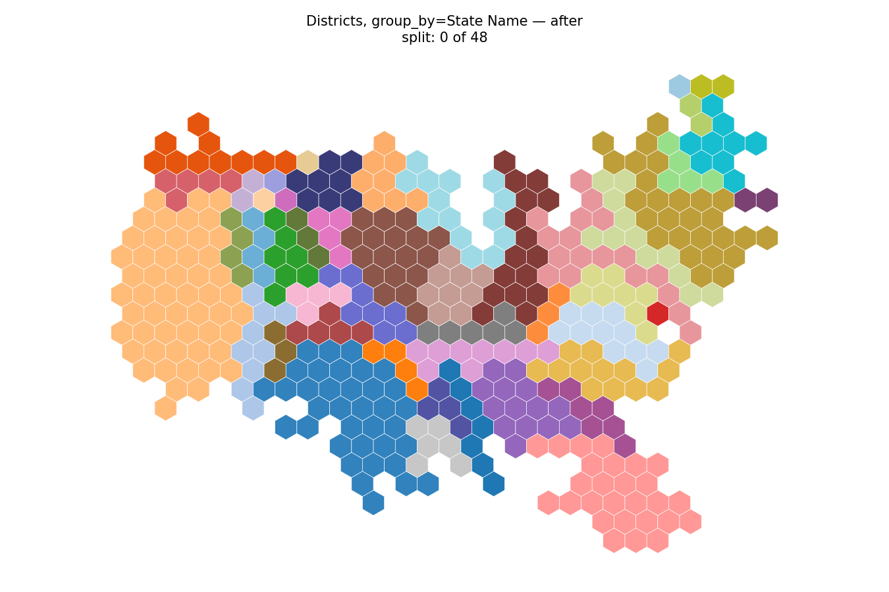
Districts + group_by, this branch.
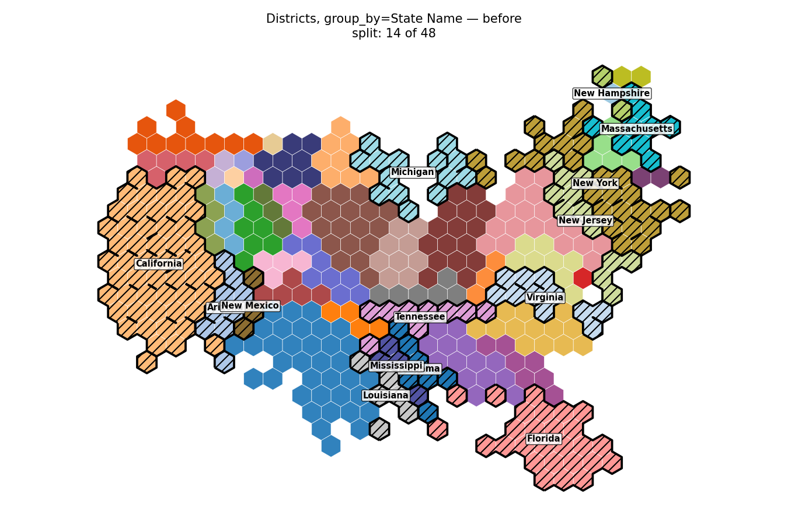
Districts + group_by, base branch.
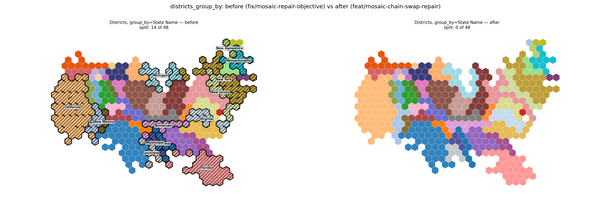
Districts grouped by state, the hardest case: 14 of 48 split before, 0 after. Split states are outlined, hatched and labelled.
fixture_after.png
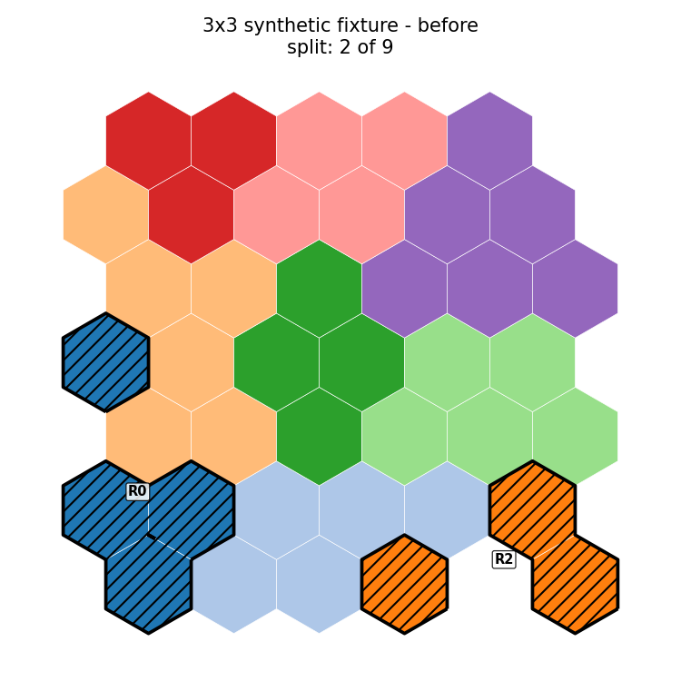
fixture_before.png
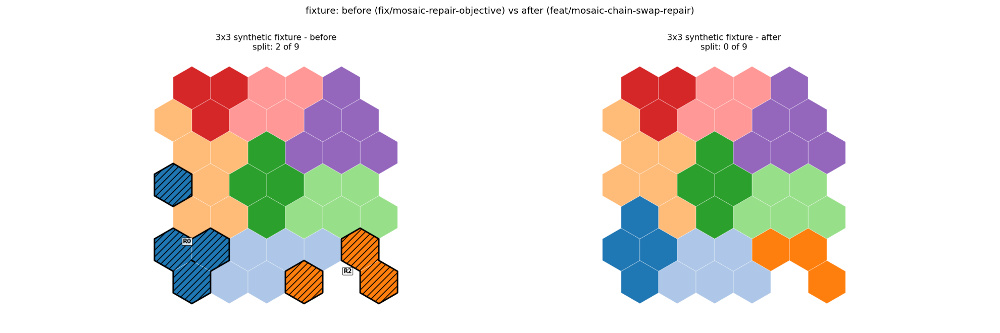
3x3 synthetic fixture: 2 of 9 split before, 0 after. This case was a strict xfail in the test suite and is now a real test.
holes_after.png
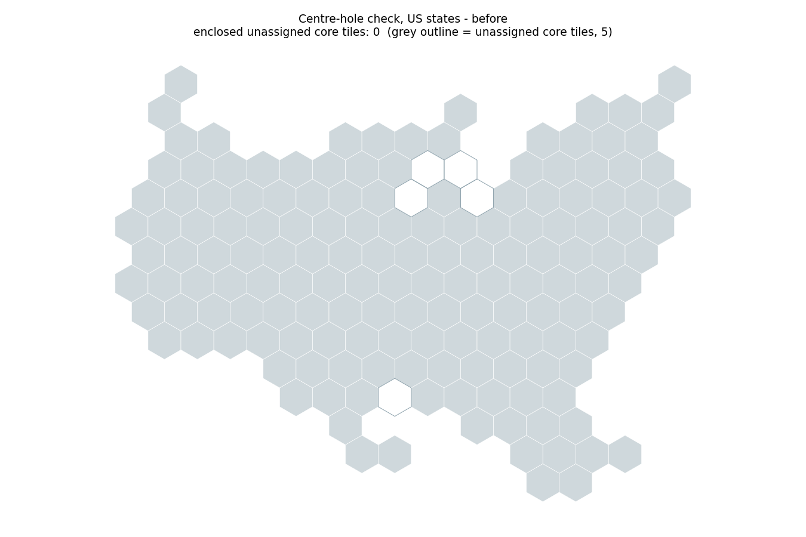
holes_before.png
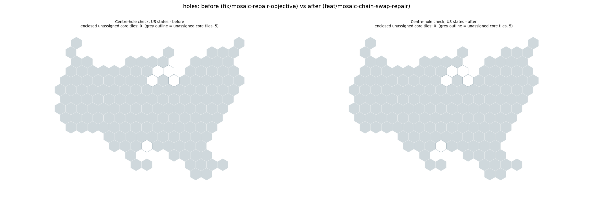
Centre-hole check on US states. The occupied tile footprint is identical before and after, with 0 enclosed unassigned core tiles in both; the 5 unassigned core tiles sit on the Great Lakes edge and are not enclosed.
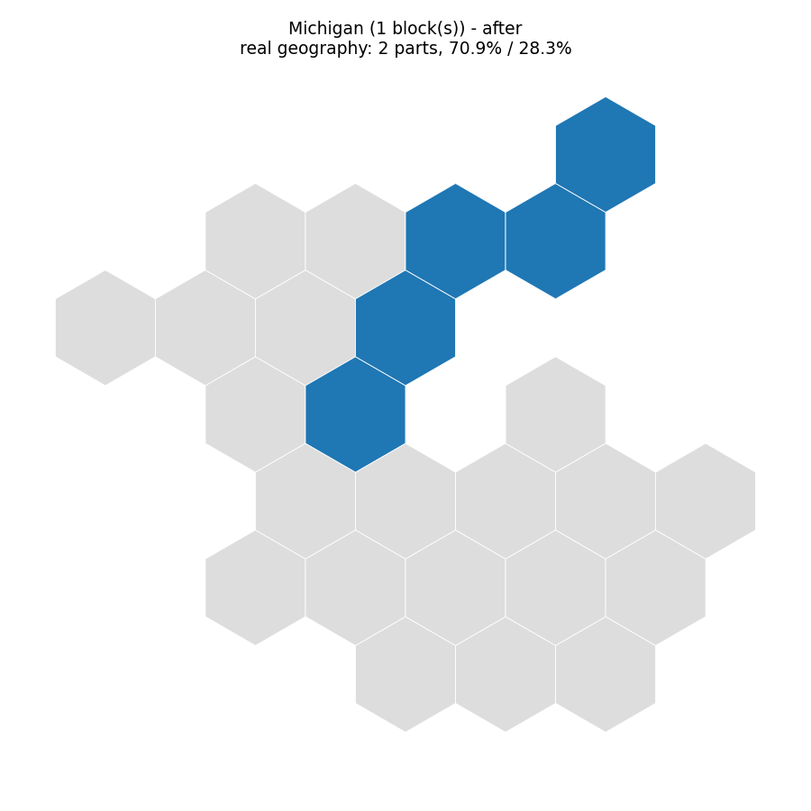
michigan_after.png
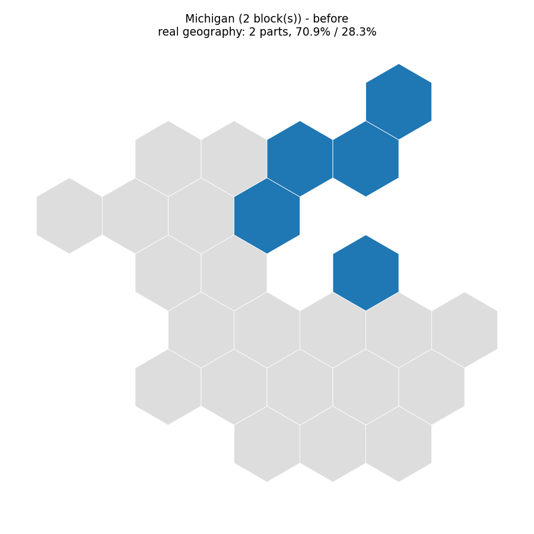
michigan_before.png
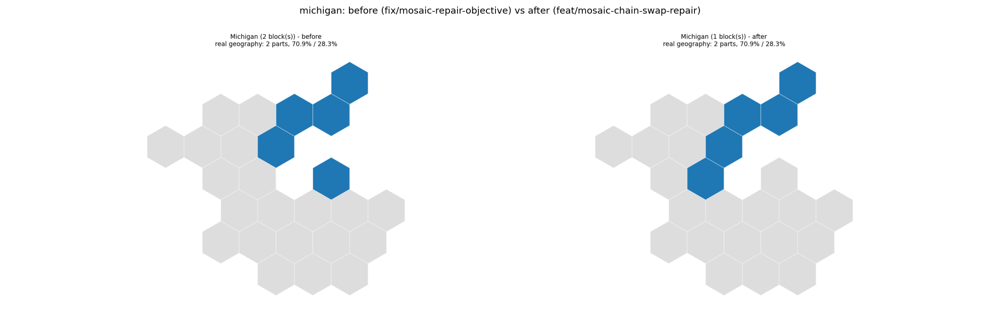
Michigan zoom. Possible over-correction, not a win: Michigan is genuinely two-part (70.9% / 28.3% of area), so its split may be the correct outcome. See "Michigan" below.
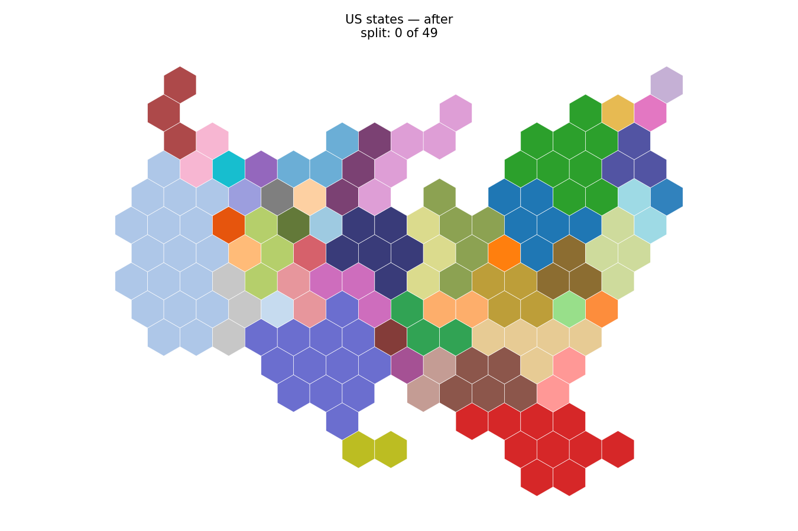
US states, this branch.
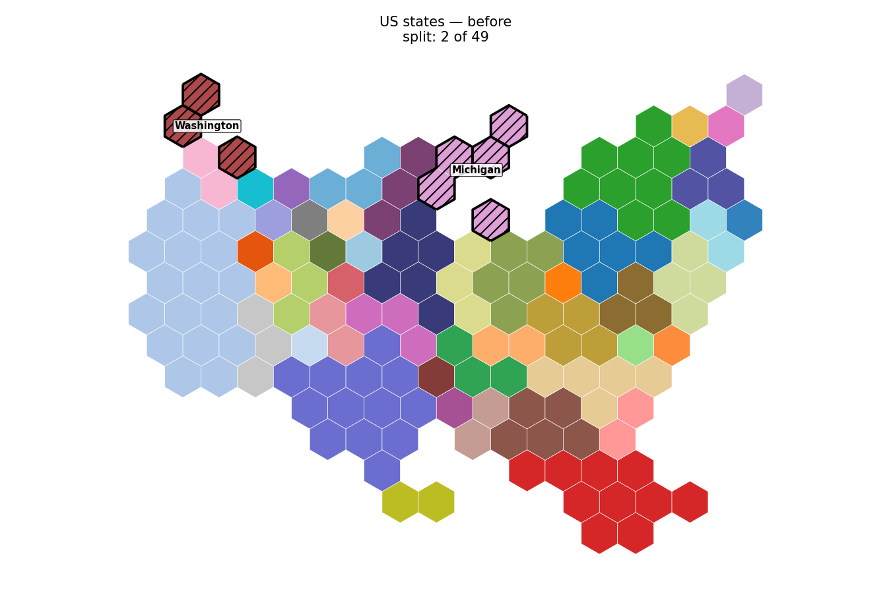
US states, base branch.
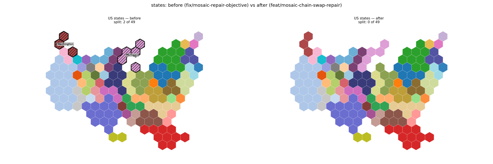
US states: 2 of 49 split before (Washington, Michigan), 0 after.